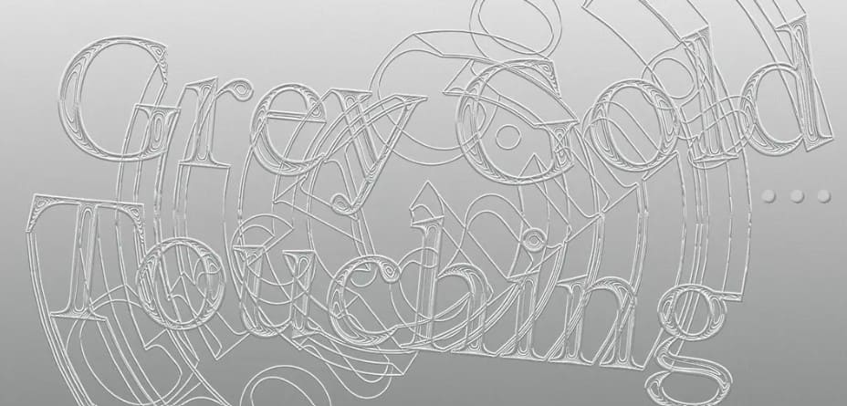
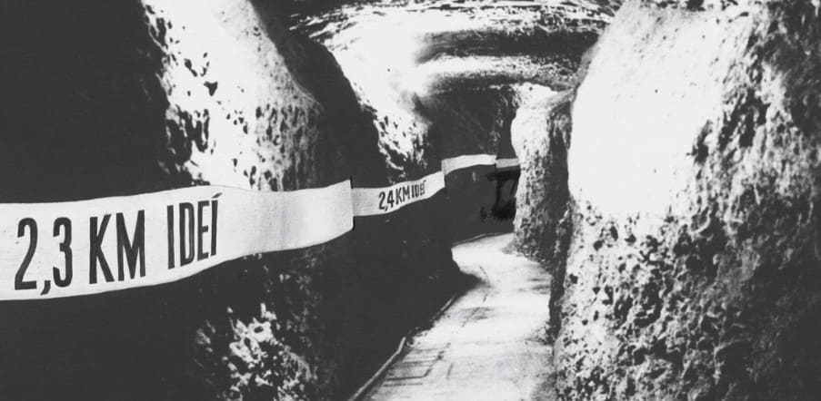
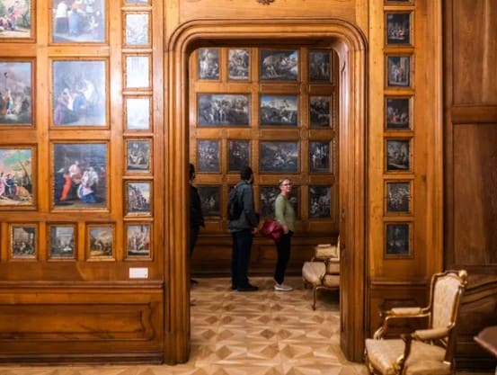

Výstava Kataríny Bajkayovej sa prostredníctvom keramiky a porcelánu venuje túžbe, zmyselnosti a nerozhodnosti z počatia dieťaťa do daných spoločenských podmienok.

Grey Gold: Dotyk
Medzinárodná výstava Grey Gold: Dotyk sa snaží prispieť k diskusii o pozícii ženy-umelkyne, má ambíciu tematizovať súvislosti veku, rodu a kreativity, i snahu zviditeľniť neskorú tvorbu umelkýň povojnových pokolení.

Umenie interakcie
pripravuje sa: od 14. 5. 2026
Dokáže umenie rozpohybovať celé naše telo a myseľ? Výstava Umenie interakcie sa zameriava na možnosti aktívneho zapojenia publika do procesu vnímania, interpretácie a vzniku umeleckých diel od 60. rokov 20. storočia.

Komentovaný sprievod Grafickými kabinetmi s Patríciou Ballx
25. 4. / 11.30
Spoznajte unikátne Grafické kabinety Mirbachovho paláca. Kontextami vzniku, ako aj námetmi tejto dekoratívnej interiérovej výzdoby, vás prevedie kurátorka zbierky starej kresby a grafiky GMB Patrícia Ballx.